Library › Topics › Learning
Everything on learning faster
Learning is not collecting highlights. This shelf gathers the books that treat it as a trainable skill: attention, practice, memory, feedback and range. Each summary keeps the method and the first action, so a reading session can become a practice session today.
41 BOOKS · ALL FREE · AUDIO IN 26 LANGUAGES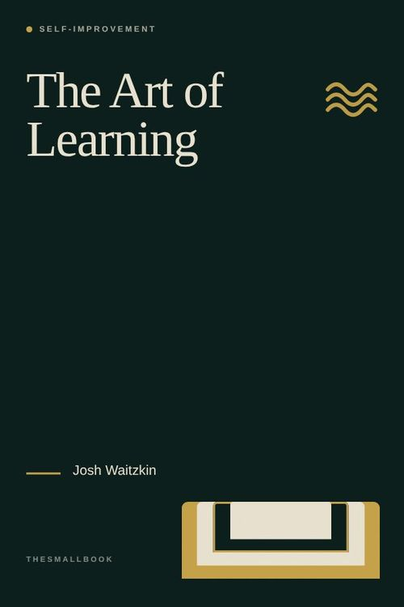
The Art of LearningJosh Waitzkin · 2007The subject of Searching for Bobby Fischer mastered two unrelated arts with one method: incremental growth, smaller circles, and turning every...8 min · 6 lessons · small read UltralearningScott H. Young · 2019Aggressive, self-directed learning - metalearning, deep practice, and direct application - can outpace formal education.11 min · 8 lessons · small read
UltralearningScott H. Young · 2019Aggressive, self-directed learning - metalearning, deep practice, and direct application - can outpace formal education.11 min · 8 lessons · small read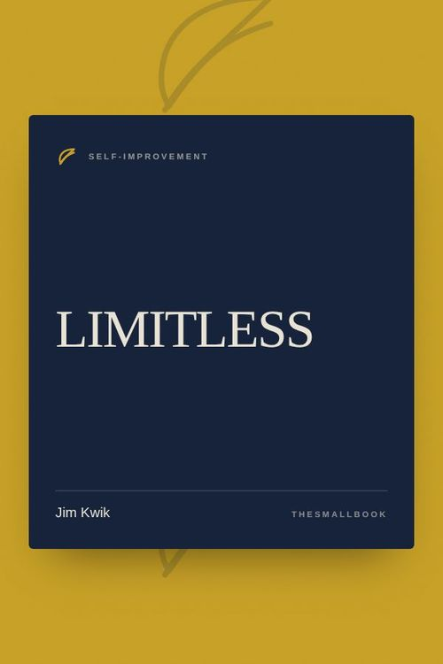
LimitlessJim Kwik · 2020There's no such thing as a good or bad memory - only trained and untrained. Unlimit your mindset, motivation, and methods.8 min · 6 lessons · small read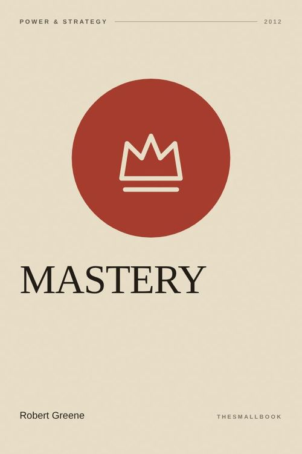
MasteryRobert Greene · 2012Mastery isn't genetics - it's a repeatable path: find your life's task, serve the apprenticeship, absorb mentors, master people, and fuse it all into...8 min · 6 lessons · small read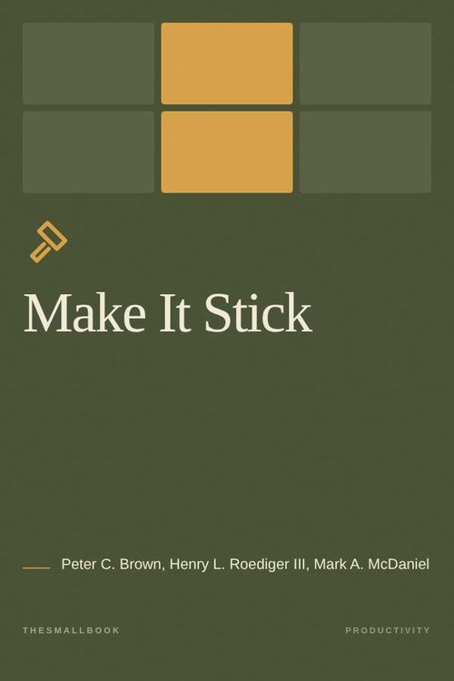
Make It StickPeter C. Brown, Henry L. Roediger III, Mark A. McDaniel · 2014Learning sticks when it feels hard: retrieval, spacing and interleaving beat re-reading, cramming and highlighting every time.8 min · 6 lessons · small read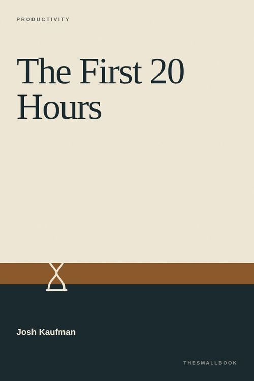
The First 20 HoursJosh Kaufman · 2013The 10,000-hour rule is about mastery. For useful skill, 45 minutes a day for a month of smart, barrier-free, feedback-rich practice gets you...8 min · 10 lessons · small read RangeDavid Epstein · 2019The Tiger Woods path (specialize at 2) wins in golf. Almost everywhere else, the Roger Federer path (sample, quit, switch, integrate) wins - because...8 min · 6 lessons · small read
RangeDavid Epstein · 2019The Tiger Woods path (specialize at 2) wins in golf. Almost everywhere else, the Roger Federer path (sample, quit, switch, integrate) wins - because...8 min · 6 lessons · small read The Almanack of Naval RavikantEric Jorgenson · 2020Seek wealth, not money: assets that earn while you sleep. And happiness is a skill you can learn, like coding.8 min · 6 lessons · small read
The Almanack of Naval RavikantEric Jorgenson · 2020Seek wealth, not money: assets that earn while you sleep. And happiness is a skill you can learn, like coding.8 min · 6 lessons · small read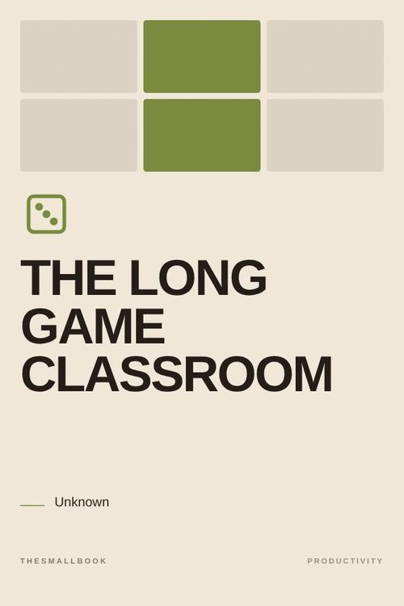
The Long Game ClassroomUnknown · 2026A TheSmallBook Original about the study practices that actually produce durable learning.11 min · 10 lessons · small read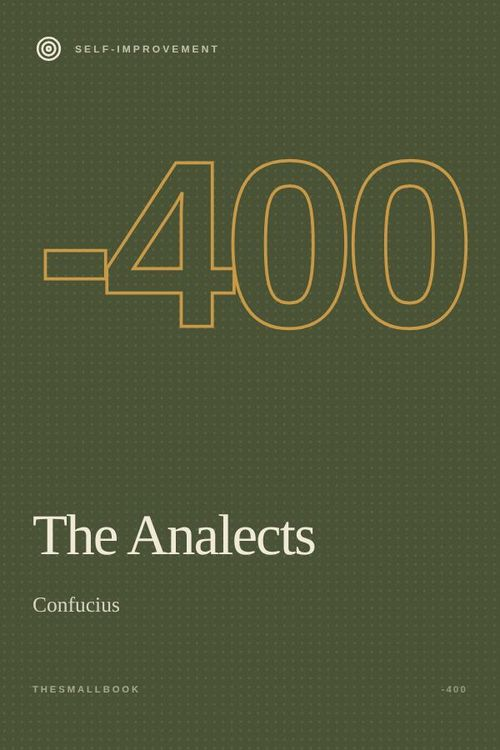
The AnalectsConfucius · -400Confucius' programme: the superior person cultivates himself daily - first study, then practice, then character.7 min · 9 lessons · small read Hidden PotentialAdam Grant · 2023Potential is not a fixed gift you either have or lack. It is built through character skills, smart practice and systems that open doors for people...11 min · 10 lessons · small readThe Repair EconomyUnknown · 2026A TheSmallBook Original about why things stopped being repaired and what the return of repair would require.11 min · 10 lessons · small read
Hidden PotentialAdam Grant · 2023Potential is not a fixed gift you either have or lack. It is built through character skills, smart practice and systems that open doors for people...11 min · 10 lessons · small readThe Repair EconomyUnknown · 2026A TheSmallBook Original about why things stopped being repaired and what the return of repair would require.11 min · 10 lessons · small read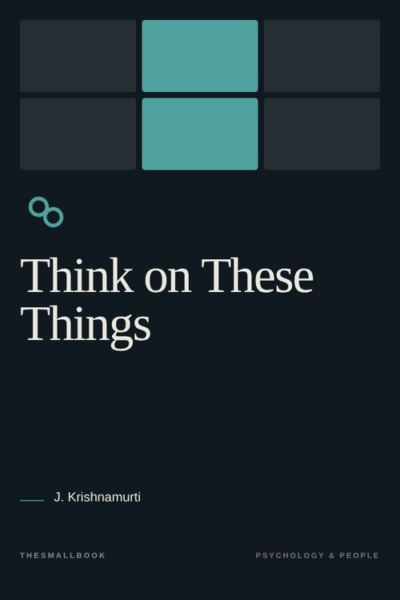
Think on These ThingsJ. Krishnamurti · 1964Question authority, your own most of all; see without the filter of memory, and you are free.7 min · 10 lessons · small read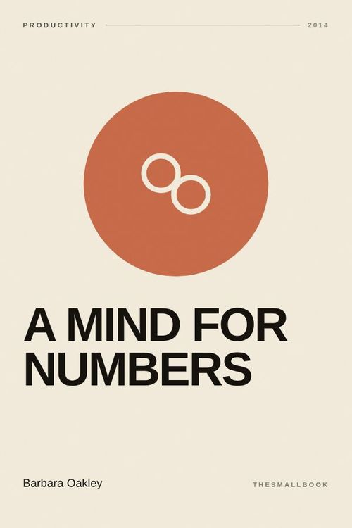
A Mind for NumbersBarbara Oakley · 2014Math and science aren't about talent - they're about two modes of thinking, chunks, and the courage to be a beginner.8 min · 6 lessons · small read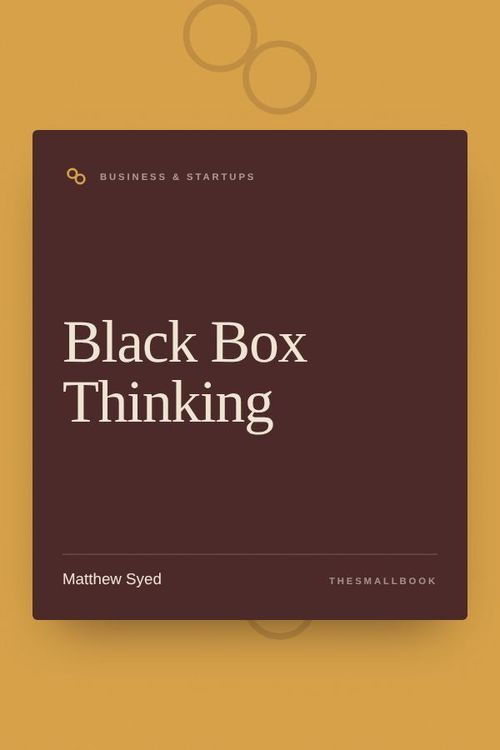
Black Box ThinkingMatthew Syed · 2015Aviation treats every failure as data and got massively safer; healthcare and other blame cultures bury errors and repeat them. Open-loop learning,...10 min · 10 lessons · small read So Good They Can't Ignore YouCal Newport · 2012Don't follow your passion - bring it with you. Build career capital through deliberate practice, then cash it in for autonomy and mission.8 min · 6 lessons · small read
So Good They Can't Ignore YouCal Newport · 2012Don't follow your passion - bring it with you. Build career capital through deliberate practice, then cash it in for autonomy and mission.8 min · 6 lessons · small read The Art of Being AloneRenuka Gavrani · 2021Renuka Gavrani's warm, practical guide to solitude: how being alone with yourself can become your greatest relationship instead of your biggest fear.8 min · 6 lessons · small read
The Art of Being AloneRenuka Gavrani · 2021Renuka Gavrani's warm, practical guide to solitude: how being alone with yourself can become your greatest relationship instead of your biggest fear.8 min · 6 lessons · small read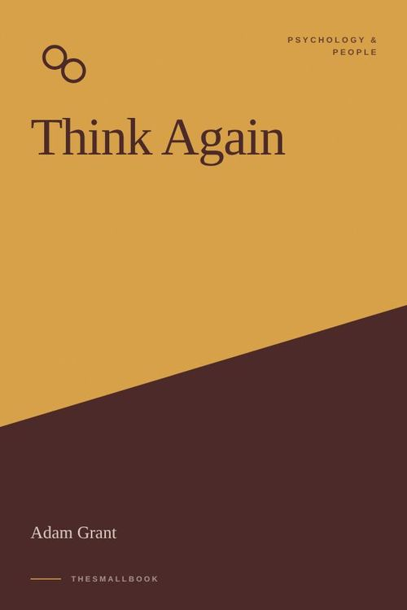
Think AgainAdam Grant · 2021Intelligence is the ability to think; wisdom is the ability to RETHINK. Be the scientist, not the preacher, prosecutor, or politician.8 min · 6 lessons · small read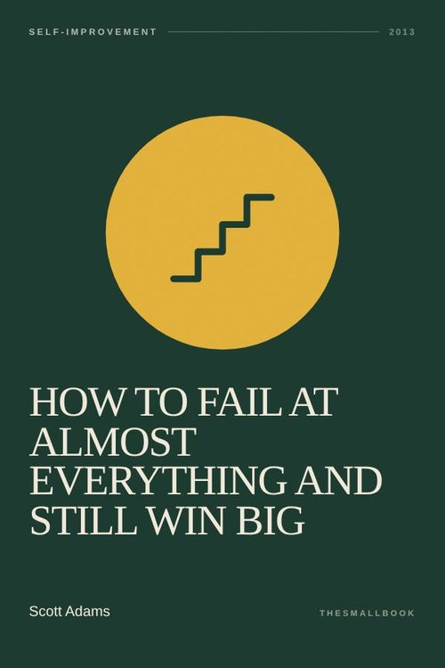
How to Fail at Almost Everything and Still Win BigScott Adams · 2013The Dilbert creator failed at everything - then won by using systems instead of goals, stacking mediocre skills into rarity, and managing energy like...8 min · 6 lessons · small read The Alignment ProblemBrian Christian · 2020We are teaching machines from data and rewards, and every shortcut we take becomes a behaviour that does not match what we meant.11 min · 10 lessons · small read
The Alignment ProblemBrian Christian · 2020We are teaching machines from data and rewards, and every shortcut we take becomes a behaviour that does not match what we meant.11 min · 10 lessons · small read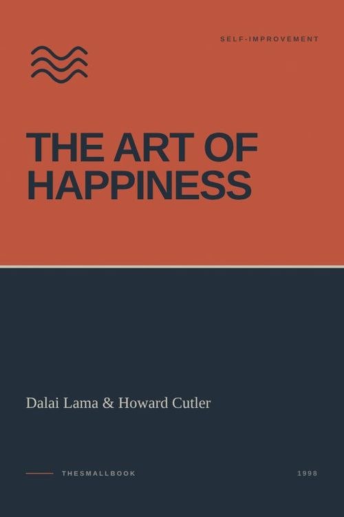
The Art of HappinessDalai Lama & Howard Cutler · 1998Cutler's dialogues with the Dalai Lama distil happiness into a trainable skill: it comes from inner discipline, compassion and reframing - not from...8 min · 6 lessons · small read The Art of LovingErich Fromm · 1956Most people think the problem is finding the right person to love. Fromm says the problem is learning how to love at all.8 min · 8 lessons · small readThe Daily LawsRobert Greene · 2021You don't master power in a week - you absorb it daily. One page a day, for a year.8 min · 6 lessons · small read
The Art of LovingErich Fromm · 1956Most people think the problem is finding the right person to love. Fromm says the problem is learning how to love at all.8 min · 8 lessons · small readThe Daily LawsRobert Greene · 2021You don't master power in a week - you absorb it daily. One page a day, for a year.8 min · 6 lessons · small read The Diary of a CEOSteven Bartlett · 2023Master the four pillars - self, story, philosophy, team - because the laws of great companies are the laws of great lives, tested at scale.8 min · 6 lessons · small readThe Good LifeRobert Waldinger and Marc Schulz · 2023Robert Waldinger and Marc Schulz report from the Harvard Study of Adult Development: relationships keep us healthier and happier, and the effect is...11 min · 10 lessons · small read
The Diary of a CEOSteven Bartlett · 2023Master the four pillars - self, story, philosophy, team - because the laws of great companies are the laws of great lives, tested at scale.8 min · 6 lessons · small readThe Good LifeRobert Waldinger and Marc Schulz · 2023Robert Waldinger and Marc Schulz report from the Harvard Study of Adult Development: relationships keep us healthier and happier, and the effect is...11 min · 10 lessons · small read The Inner Game of TennisW. Timothy Gallwey · 1974Quiet the inner critic, trust your body's own learning, and performance improves by itself - in tennis, work and life.7 min · 9 lessons · small read
The Inner Game of TennisW. Timothy Gallwey · 1974Quiet the inner critic, trust your body's own learning, and performance improves by itself - in tennis, work and life.7 min · 9 lessons · small read The Lean StartupEric Ries · 2011A startup's only job is learning what customers actually want - faster than the money runs out.8 min · 6 lessons · small read
The Lean StartupEric Ries · 2011A startup's only job is learning what customers actually want - faster than the money runs out.8 min · 6 lessons · small read The Mom TestRob Fitzpatrick · 2013Never ask if your idea is good - even your mom will lie. Ask about their life, their past, their problems: facts, not compliments.8 min · 6 lessons · small read
The Mom TestRob Fitzpatrick · 2013Never ask if your idea is good - even your mom will lie. Ask about their life, their past, their problems: facts, not compliments.8 min · 6 lessons · small read Fooled by RandomnessNassim Nicholas Taleb · 2001Luck wears a suit and calls itself skill. Learn to tell them apart before you copy the wrong person - or become them.8 min · 6 lessons · small read
Fooled by RandomnessNassim Nicholas Taleb · 2001Luck wears a suit and calls itself skill. Learn to tell them apart before you copy the wrong person - or become them.8 min · 6 lessons · small read GritAngela Duckworth · 2016Talent × effort = skill. Skill × effort = achievement. Effort counts twice - and grit, not genius, predicts who finishes.8 min · 6 lessons · small readIt Happened in IndiaKishore Biyani · 2007Kishore Biyani's account of building Future Group (Pantaloons, Big Bazaar, Central) by designing retail around how Indians actually shop: festival...11 min · 8 lessons · small read
GritAngela Duckworth · 2016Talent × effort = skill. Skill × effort = achievement. Effort counts twice - and grit, not genius, predicts who finishes.8 min · 6 lessons · small readIt Happened in IndiaKishore Biyani · 2007Kishore Biyani's account of building Future Group (Pantaloons, Big Bazaar, Central) by designing retail around how Indians actually shop: festival...11 min · 8 lessons · small read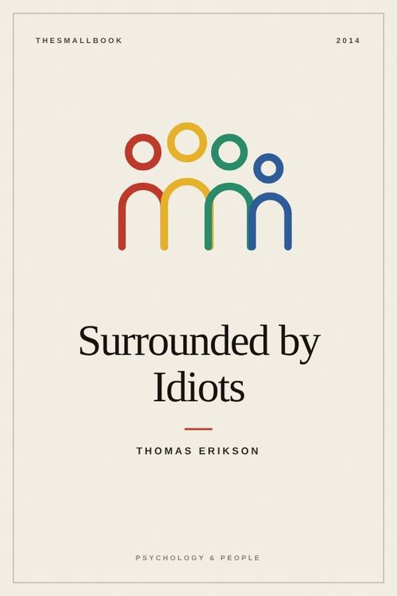
Surrounded by IdiotsThomas Erikson · 2014People aren't idiots - they're just a different color. Learn Red, Yellow, Green, and Blue, and communication finally makes sense.11 min · 8 lessons · small readThe Age of AIHenry A. Kissinger, Eric Schmidt and Daniel Huttenlocher · 2021Kissinger, Schmidt and Huttenlocher argue that machine learning produces answers without explanations, and that this changes how we reason, decide...11 min · 10 lessons · small read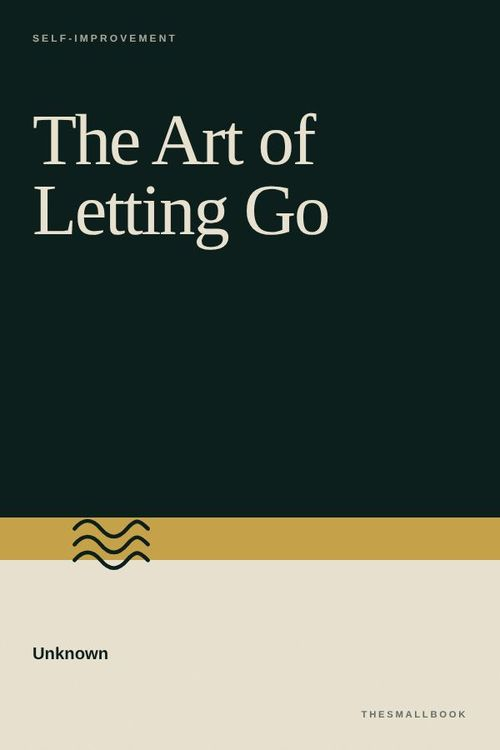
The Art of Letting GoUnknown · 2026Everyone talks about holding on. Almost nobody teaches the other skill, the one with the bigger returns: putting things down on purpose.11 min · 11 lessons · small read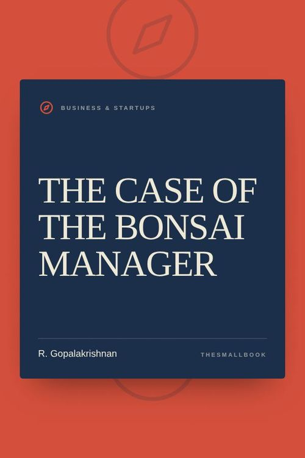
The Case of the Bonsai ManagerR. Gopalakrishnan · 2012R. Gopalakrishnan diagnoses the 'bonsai syndrome' - how Indian workplaces prune managers small - and prescribes growing like a banyan instead.8 min · 6 lessons · small read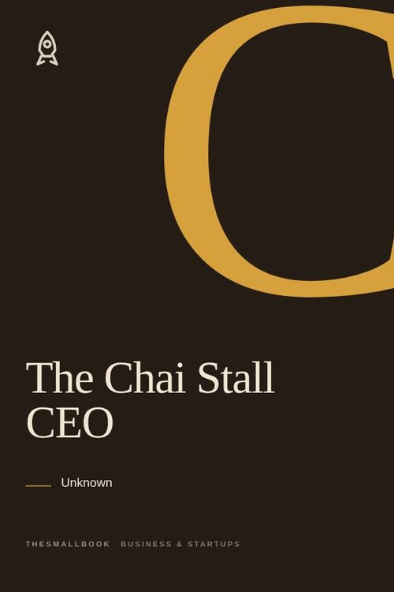
The Chai Stall CEOUnknown · 2026What the street-level Indian entrepreneur knows about costs, cash, loyalty and growth that boardrooms keep relearning the expensive way.11 min · 10 lessons · small read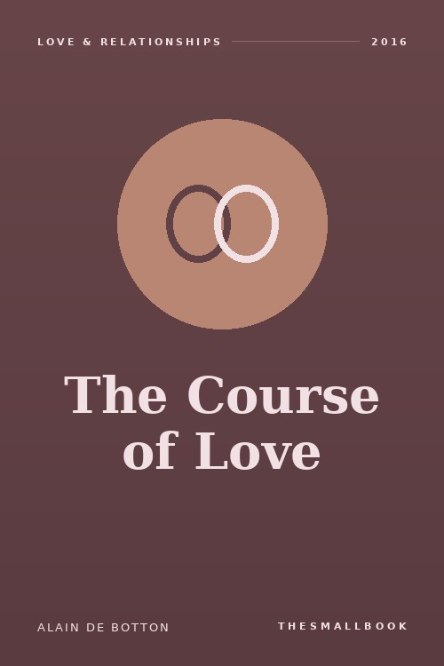
The Course of LoveAlain de Botton · 2016Romanticism promised that the right person makes love effortless. Reality: love is a skill of interpreting each other's madness with generosity.8 min · 8 lessons · small read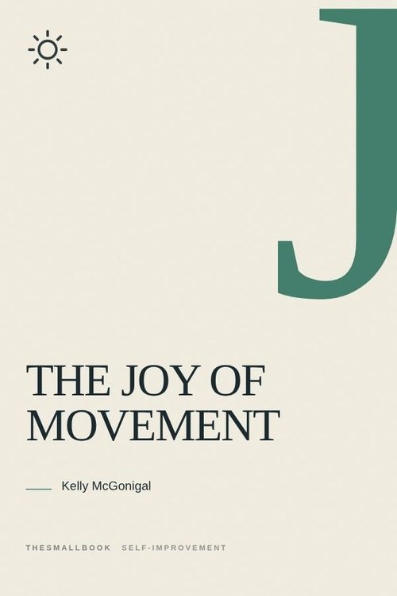
The Joy of MovementKelly McGonigal · 2019Kelly McGonigal argues that exercise changes mood, memory and social connection, and that the joy is the point rather than a bonus.11 min · 10 lessons · small read The Psychology of MoneyMorgan Housel · 2020Doing well with money is a soft skill: how you behave beats what you know. Every time.11 min · 8 lessons · small read
The Psychology of MoneyMorgan Housel · 2020Doing well with money is a soft skill: how you behave beats what you know. Every time.11 min · 8 lessons · small read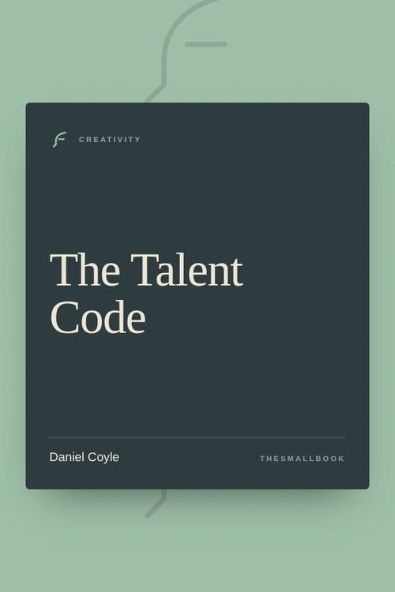
The Talent CodeDaniel Coyle · 2009Talent is a code: deep practice builds myelin, ignition fuels the fire, and master coaching guides the way.8 min · 6 lessons · small readWhat Young India WantsChetan Bhagat · 2012Chetan Bhagat's essays to young India - on education, corruption, careers and love - arguing that personal responsibility is the only reform that...8 min · 6 lessons · small readStart here
For a direct method, open How do I learn anything faster? For a ranked shelf, see the best books on learning fast. Then pick one book and use its first lesson before you buy another course.
Every summary free, with lessons and action steps.